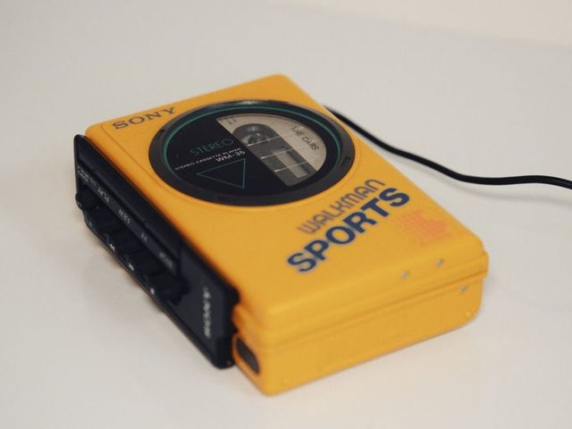
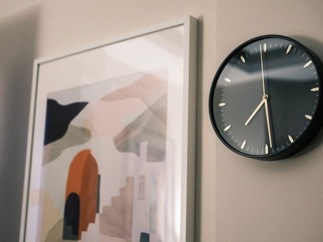
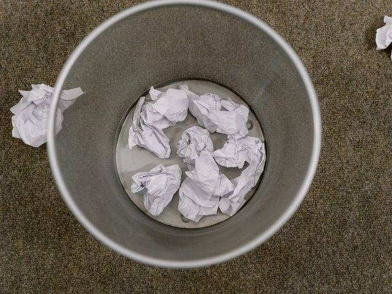
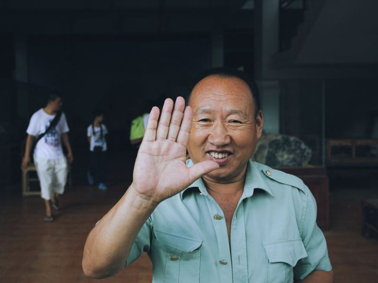
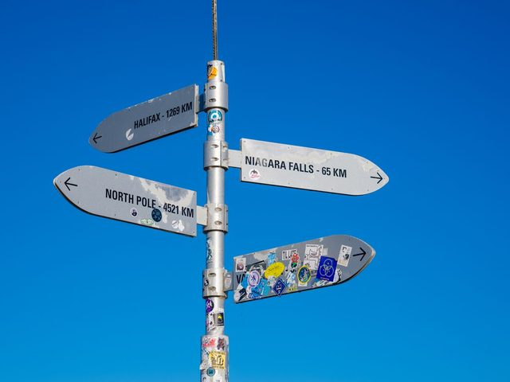
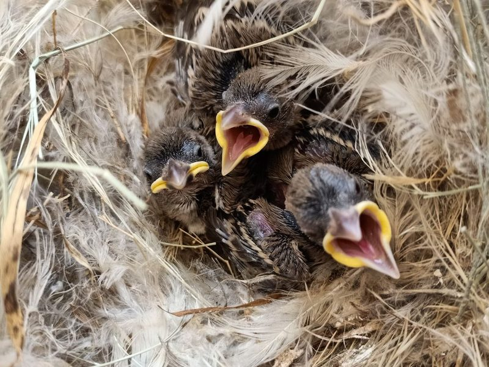
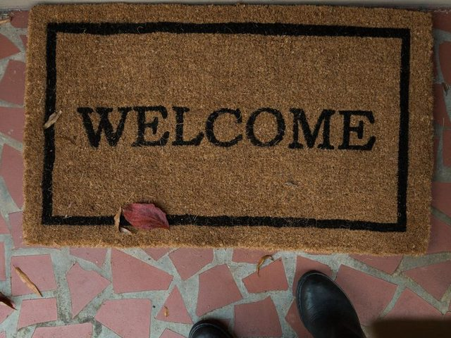
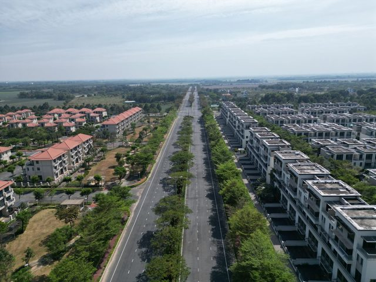

UNIT 52 · VOCABULARY
W 開頭（一）
W+Y+Z-I
45 個單字聽・唸・用
本單元單字一覽
WORD UP「W+Y+Z-I」的 45 個字（waist 到 width）。紅色＝要複習，藍色標籤＝WORD UP 標熟記、還要在這裡考對。
waistwaitwaiterwaitresswakewalkwalkmanwallwalletwantwarwarmwashwastewatchwaterwaterfallwatermelonwavewayweakweaponwearweatherweddingWednesdayweekweekdayweekendweeklyweightwelcomewellwestwesternwetwhalewheelwhenwhitewholewhywidewidenwidth
每個字都有 🔊，先聽發音、跟著唸，再看例句。
單字 1–4

waist
腰n.
She tied a belt around her waist.
她在腰上繫了一條皮帶。
她在腰上繫了一條皮帶。
wait
等待v.
Please wait for me.
請等我。
請等我。

waiter
服務生（男）n.
The waiter brought us the menu.
服務生拿菜單給我們。
服務生拿菜單給我們。
waitress
女服務生n.
The waitress is very polite.
那位女服務生很有禮貌。
那位女服務生很有禮貌。
單字 5–8

wake
醒來；叫醒v.
Wake me up at six.
六點叫我起床。
六點叫我起床。

walk
走路；散步v./n.
Let's take a walk in the park.
我們去公園散步吧。
我們去公園散步吧。

walkman
隨身聽n.
My dad used a walkman when he was young.
我爸爸年輕時用隨身聽。
我爸爸年輕時用隨身聽。

wall
牆n.
There is a clock on the wall.
牆上有一個時鐘。
牆上有一個時鐘。
單字 9–12
wallet
皮夾n.
I lost my wallet.
我弄丟了皮夾。
我弄丟了皮夾。
🙋
want
想要v.
I want to be a doctor.
我想當醫生。
我想當醫生。
⚔️
war
戰爭n.
Nobody wants war.
沒有人想要戰爭。
沒有人想要戰爭。

warm
溫暖的adj.
It's warm today.
今天很暖和。
今天很暖和。
單字 13–16
wash
洗v.
Wash your hands before eating.
吃飯前要洗手。
吃飯前要洗手。

waste
浪費；廢棄物v./n.
Don't waste time playing games.
不要浪費時間玩遊戲。
不要浪費時間玩遊戲。

watch
看；手錶v./n.
I watch TV after dinner.
我晚餐後看電視。
我晚餐後看電視。

water
水；澆水n./v.
Water the plants every day.
每天幫植物澆水。
每天幫植物澆水。
單字 17–20
waterfall
瀑布n.
We took photos by the waterfall.
我們在瀑布旁拍照。
我們在瀑布旁拍照。

watermelon
西瓜n.
Watermelon is sweet and juicy.
西瓜又甜又多汁。
西瓜又甜又多汁。

wave
波浪；揮手n./v.
She waved goodbye to us.
她向我們揮手道別。
她向我們揮手道別。

way
路；方法n.
Is this the way to the station?
這是去車站的路嗎？
這是去車站的路嗎？
單字 21–24

weak
虛弱的；弱的adj.
I feel weak after the flu.
感冒後我覺得很虛弱。
感冒後我覺得很虛弱。
🗡️
weapon
武器n.
Guns are dangerous weapons.
槍是危險的武器。
槍是危險的武器。
wear
穿；戴v.
She is wearing a red dress.
她穿著紅洋裝。
她穿著紅洋裝。
weather
天氣n.
How's the weather today?
今天天氣如何？
今天天氣如何？
單字 25–28
wedding
婚禮n.
We went to my aunt's wedding.
我們去參加阿姨的婚禮。
我們去參加阿姨的婚禮。
🗓️
Wednesday
星期三n.
We have a test on Wednesday.
我們星期三有考試。
我們星期三有考試。
📅
week
星期；週n.
I'll see you next week.
下週見。
下週見。

weekday
平日（週一到週五）n.
I go to school on weekdays.
我平日上學。
我平日上學。
單字 29–32

weekend
週末n.
What did you do on the weekend?
你週末做了什麼？
你週末做了什麼？
🔁
weekly
每週的adj.
We have a weekly quiz.
我們每週有小考。
我們每週有小考。

weight
重量；體重n.
He wants to lose weight.
他想減重。
他想減重。

welcome
歡迎v./adj.
Welcome to Taiwan!
歡迎來到台灣！
歡迎來到台灣！
單字 33–36
well
很好地；健康的adv./adj.
She sings very well.
她唱歌唱得很好。
她唱歌唱得很好。

west
西方；西方的n./adj.
The sun sets in the west.
太陽從西方落下。
太陽從西方落下。
western
西方的；西部的adj.
I like Western food.
我喜歡西餐。
我喜歡西餐。

wet
濕的adj.
My shoes are wet.
我的鞋子濕了。
我的鞋子濕了。
單字 37–40

whale
鯨魚n.
Whales are the biggest animals.
鯨魚是最大的動物。
鯨魚是最大的動物。
wheel
輪子n.
A bike has two wheels.
腳踏車有兩個輪子。
腳踏車有兩個輪子。
🕐
when
何時；當…時adv./conj.
When is your birthday?
你的生日是什麼時候？
你的生日是什麼時候？
white
白色的adj./n.
Snow is white.
雪是白色的。
雪是白色的。
單字 41–44
🍕
whole
全部的；整個的adj.
I ate the whole pizza.
我吃了整個披薩。
我吃了整個披薩。
❓
why
為什麼adv.
Why are you late?
你為什麼遲到？
你為什麼遲到？

wide
寬的adj.
The road is wide.
這條路很寬。
這條路很寬。
🚧
widen
使變寬；拓寬v.
They will widen the road.
他們要拓寬這條路。
他們要拓寬這條路。
單字 45–45
📐
width
寬度n.
What is the width of the table?
這張桌子的寬度是多少？
這張桌子的寬度是多少？
重點整理
| 說法 | 中文 | 例子 |
|---|---|---|
| wait for | 等待… | wait for the bus |
| waist / waste | 腰 ／ 浪費（同音） | a thin waist ／ waste time |
| weather / whether | 天氣 ／ 是否（同音） | nice weather |
| wear / put on | 穿著（狀態）／ 穿上（動作） | She wears glasses. ／ Put on your coat. |
| waste + 時間 + V-ing | 浪費時間做… | waste time watching TV |
| good / well | 形容詞 ／ 副詞 | a good singer ／ sing well |
| wide / widen / width | 寬的 ／ 拓寬 ／ 寬度 | a wide river |
wake-woke-woken、wear-wore-worn；Wednesday 的第一個 d 不發音。
快問快答：中文 → 英文
1腰waist
2服務生（男）waiter
3醒來；叫醒wake
4隨身聽walkman
5皮夾wallet
6戰爭war
7洗wash
8看；手錶watch
快問快答：英文 → 中文
1waterfall瀑布
2wave波浪；揮手
3weak虛弱的；弱的
4wear穿；戴
5wedding婚禮
6week星期；週
7weekend週末
8weight重量；體重
學完了！接下來
複習方法
review
- 回到「📗 單字卡」，按「遮中文」自己考自己
- 再按「遮英文」，看中文說出英文
- 每個例句跟著 🔊 唸一次
準備好了
- 按右上角「📝 前往測驗」
- 測驗錯的題目要訂正到全對
- 訂正完成補送 1 點